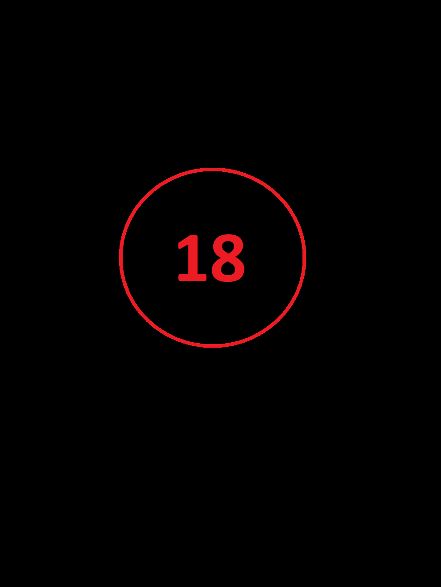
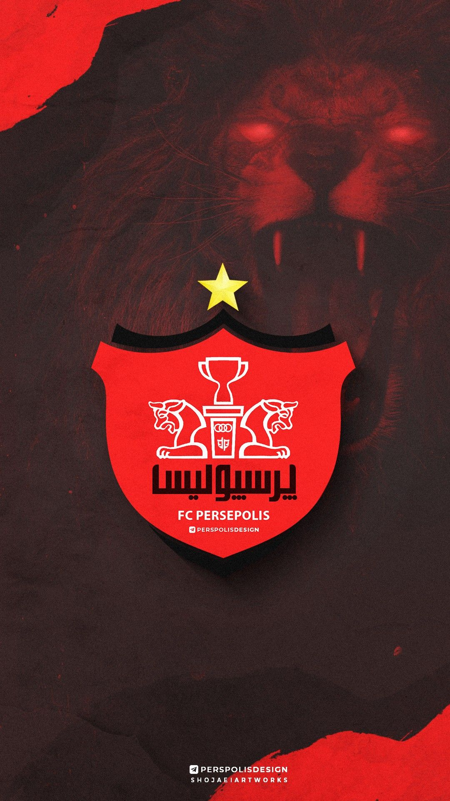

Műszaki rajzlapok
Mivel a BME Gépészmérnöki karán gépészmérnöknek tanulok, ezért volt szerencsém összefutni és készíteni műszaki rajzokat.

Először, mikor nem tudtam még, hogy mit kéne a munkásságomhoz rakni ez jutott eszembe, de meggondoltam magam, mivel valamit jobb nem tudni.
Éjszakai életem
Először, mikor nem tudtam még, hogy mit kéne a munkásságomhoz rakni ez jutott eszembe, de meggondoltam magam, mivel valamit jobb nem tudni.

A világ legjobb csapata a Persepolis F. C főleg ha sportfogadásról van szó. Nekik mindig nyerő a szériájuk és ázsiai BL ezüstérmesek is voltak.
Életem focicsapata
A világ legjobb csapata a Persepolis F. C főleg ha sportfogadásról van szó. Nekik mindig nyerő a szériájuk és ázsiai BL ezüstérmesek is voltak.